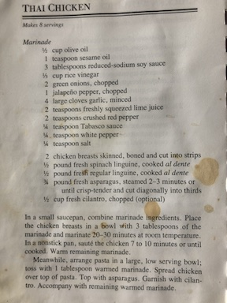

Before attending RIT, I went to Tabor Academy in Marion, MA for highschool. I grew up in the area in a neighboring town called Rochester, MA. My favorite time of year in Massachusetts was fall because my family and I would go apple picking, look at the leaves changing, and we would attend the Apple Peach Festival in my hometown. For fun I like to quilt, sew, and hike. At RIT, I have joined the a cappella group Proof of Purchase or PoP and RIT Players to help with costuming.
